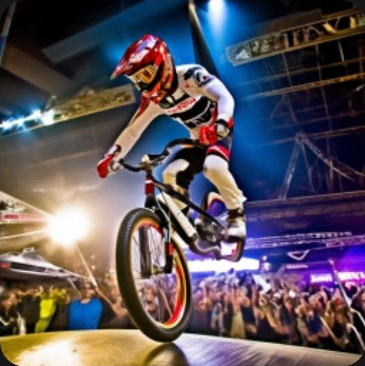

Велосипедный гонщик (1909 год)
Почтовая марка СССР, 1935 год. Серия «Спорт в СССР. Спартакиада»: Велосипедный спорт.
"Велосипедисты разработали инновационный "Экоспорт-Байк" для устойчивого транспорта: велосипед на солнечных батареях. Новое изобретение позволяет ездить на велосипеде, используя энергию солнца, что сделает поездки более экологичными и долгосрочными. Впервые протестированный прототип успешно преодолел длинное расстояние, питаясь исключительно от солнечных лучей. Экоспорт-Байк стал символом инноваций в велоспорте и экологически ответственного образа жизни."
"Экстремальное велосипедное шоу "Воздушные Перчатки" впервые покорило небеса! Группа смелых велосипедистов представила уникальное выступление, выполняя трюки на специально адаптированных велосипедах, оснащенных миниатюрными парашютами. Во время шоу артисты поднимались в воздух, выполняя впечатляющие воздушные акробатические элементы. Это событие стало настоящим хитом среди любителей велоспорта и экстремальных развлечений, привлекая внимание как профессиональных спортсменов, так и широкой публики."/p>